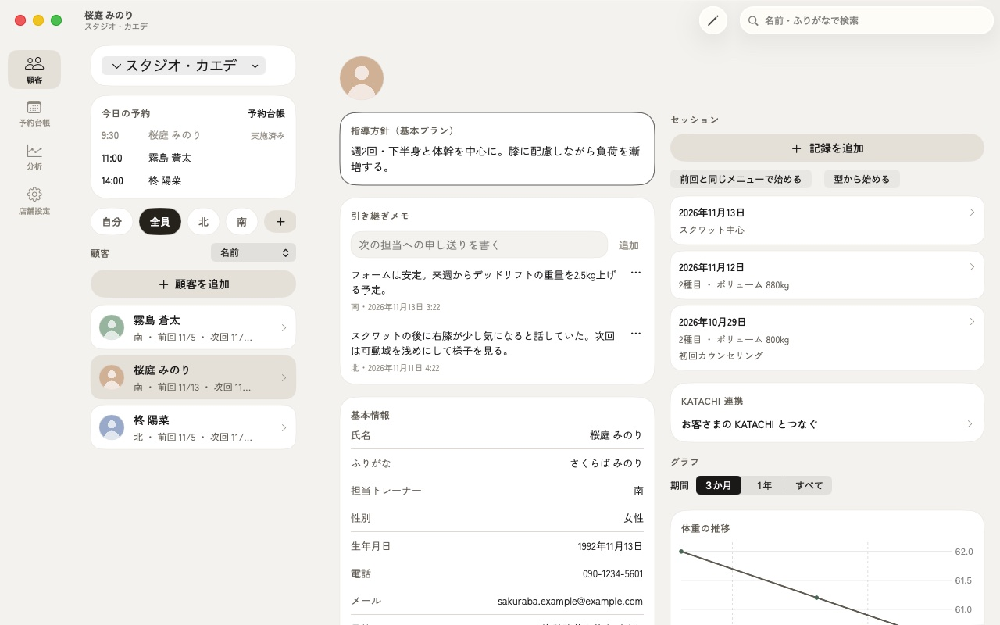
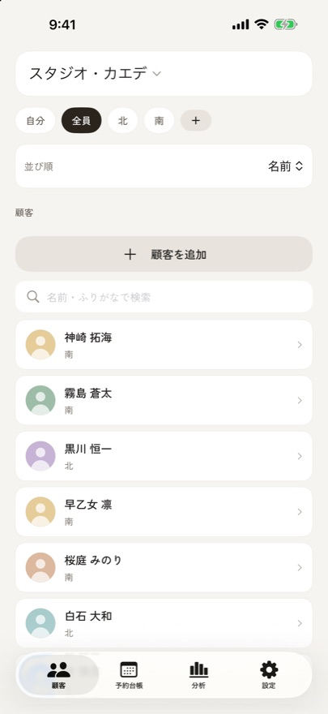
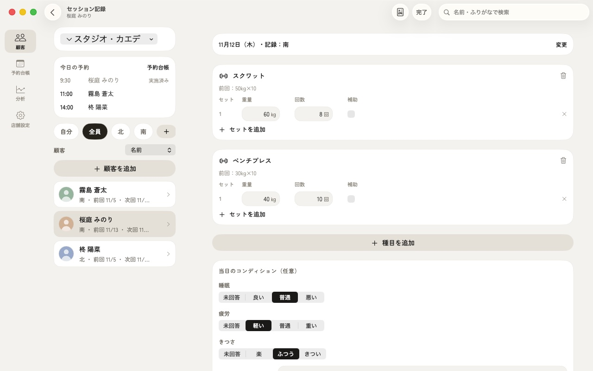
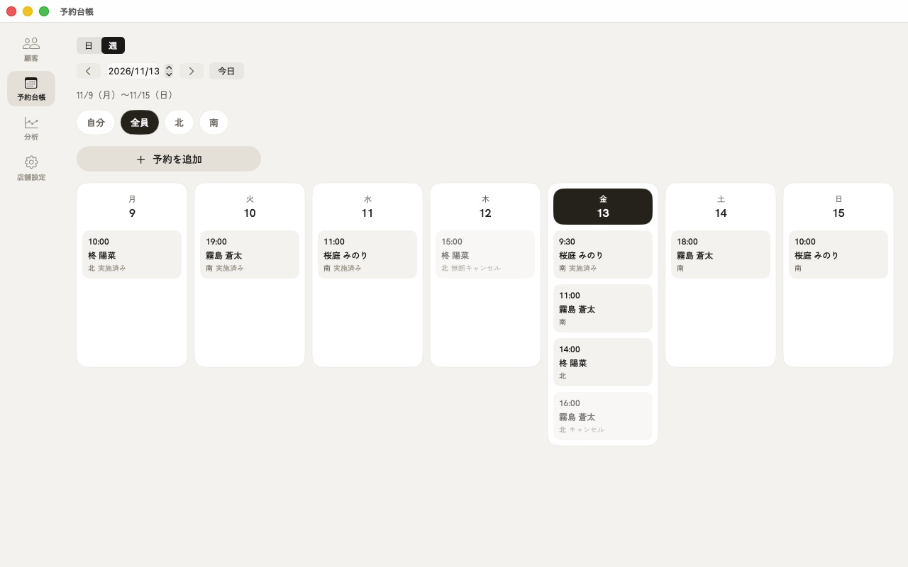
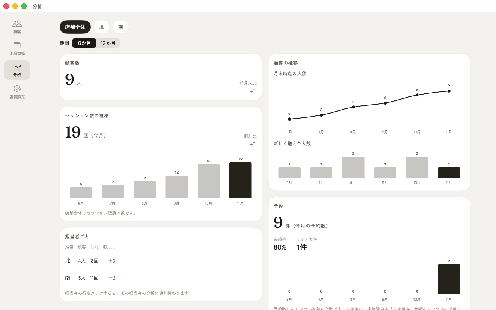

パーソナルジム・スタジオの顧客カルテと予約台帳
顧客カルテと予約台帳を、
店舗のみんなで。
パーソナルトレーナーと小さなジム・スタジオのための、顧客カルテ・セッション記録・予約台帳・分析。スタッフを招待して店舗で共有できます。顧客の記録は Pohoda のサーバーを通らず、オーナーの iCloud に置かれます。
1人・顧客5人まで無料・カードの登録なし・アカウント登録なし


紙のカルテと別々の道具で、止まりがちなこと
カルテと申し送りを店舗で共有
指導方針と引き継ぎメモがカルテのいちばん上に。前回の記録を見ながら、セットを数タップで足せます。
同意書もカウンセリングも iPad で
人体図をタップして気になる部位を記録。同意書はその場で署名してもらい、PDF で残ります。
1人 月額1,000円。買い切りも
予約の受付は今の LINE・電話・予約サービスのまま。受けた予約を台帳に入れ、そのままセッションの記録へ進めます。
業種を選ぶと、記録の入力欄が変わる
店舗を作るときに業種を選ぶと、種目・記録の入力欄・カウンセリングの質問がその業種に合わせて入ります。
機能
カルテ・記録・予約台帳・分析をひとつに。契約 の印があるものは、使う人ごとの契約で使えます。
カルテに、方針と申し送り
顧客を選ぶと、指導方針・引き継ぎメモ・これまでのセッションが1画面に並びます。書いた人と日時が残り、店舗のスタッフ全員が見られます。
- 顧客台帳（顔写真・連絡先・生年月日・目的・担当・配慮事項）
- カウンセリングシート（人体図をタップして部位を記録）
- iPad でその場で署名する同意書（PDF で保存）
対面のセッションを、速く記録
前回の重量と回数が出た状態で開き、セットは数タップで足せます。メニューの型から始められ、入力のたびに自動で保存します。
- 当日のコンディション（睡眠・疲労・きつさ）
- 体重・体脂肪・周径の推移と、同じ向きで並べる姿勢写真
- その日の記録と推移を PDF のレポートにして顧客に共有

予約台帳から、そのまま記録へ
LINE や電話、予約サービスで受けた予約を、日・週で担当者ごとに確認します。予約からそのままセッションの記録へ進めます。
- 担当者での絞り込み
- 実施済み・キャンセルの記録
- 店舗の予約ページのリンクを登録して顧客に送れる

店舗と担当者の数字を、月ごとに
顧客数・セッション数・予約数と実施率を、店舗全体と担当者ごとに見られます。
- 顧客数と新しく増えた人数の推移
- 担当者ごとの顧客数とセッション数
- 前月との比較

- スタッフを招待して店舗で共有契約
- 退職したスタッフを外すと、その人の端末から店舗の記録が消える
- 2つ目以降の店舗契約
- お客さまの KATACHI とつなぎ、自主練の記録を受け取る
- CSV の書き出し
- CSV の取り込み・バックアップの復元契約
- 端末内の自動バックアップ（7世代）
- Face ID・パスコードでアプリにロック
- iPhone・iPad・Mac で使える
料金
1人で使う分は無料です。顧客を6人以上記録する、スタッフを招待して店舗で共有するときは、使う人それぞれが契約します。店舗に参加するスタッフも、それぞれ必要です。
1人で使う
カードの登録なし
無料ではじめる- 自分の店舗1つで、顧客5人まで
- セッション・予約・同意書・体組成・写真の記録
- 顧客へのレポート・CSV の書き出し・バックアップ
- お客さまの KATACHI との連携
顧客6人から・スタッフと共有1人あたり
いつでも解約できます
月あたり約833円
1人分・以後の支払いなし
- 顧客の人数の上限なし
- スタッフの招待と、店舗への参加
- 2つ目以降の店舗
- CSV の取り込み・バックアップの復元
| 使う人 | 月額 | 年額 | 買い切り |
|---|---|---|---|
| 1人 | ¥1,000毎月 | ¥10,000毎年（月あたり ¥833） | ¥19,800一度だけ |
| 2人 | ¥2,000毎月 | ¥20,000毎年（月あたり ¥1,667） | ¥39,600一度だけ |
| 3人 | ¥3,000毎月 | ¥30,000毎年（月あたり ¥2,500） | ¥59,400一度だけ |
| 5人 | ¥5,000毎月 | ¥50,000毎年（月あたり ¥4,167） | ¥99,000一度だけ |
| 10人 | ¥10,000毎月 | ¥100,000毎年（月あたり ¥8,333） | ¥198,000一度だけ |
価格は税込です。お支払いは App Store（Apple ID）で、請求書払いはありません。月額・年額は自動更新で、期間終了の24時間以上前に App Store で解約しない限り更新されます。契約が終わっても、記録の閲覧と書き出しは続けて使えます。詳しくは利用規約へ。
ほかの方法との違い
予約・会員管理のシステム（hacomono・STORES 予約など）と、紙や表計算のカルテと比べました。KATACHI + にないものも書いています。
| KATACHI + | 予約・会員管理のシステム | 紙・表計算 | |
|---|---|---|---|
| 料金の形 | 1人・顧客5人まで無料。1人 月額1,000円・年額10,000円・買い切り19,800円 | 店舗ごとの月額が中心。初期費用がかかるものも | 紙代と表計算ソフトの料金だけ |
| 顧客が自分で予約 | ない（受けた予約を台帳に記録） | できる | ない |
| オンライン決済・回数券 | ない | ある | ない |
| トレーニングの記録 | 業種ごとの入力欄（重量×回数・マシン・ポーズなど） | 製品による | 書き方を自分で決める |
| カウンセリング・同意書 | iPad で記録・署名して PDF に | 製品による | 紙で保管 |
| スタッフで共有 | 招待した人だけ（日本・使う人ごとに契約） | できる | 紙は1冊、表計算はファイルの共有で |
| データの置き場所 | 端末とオーナーの iCloud | 提供会社のサーバー | 店舗の棚・パソコン |
| ブラウザ・Android | 使えない | 使える | 使える |
予約・会員管理のシステムの内容は一般的な傾向です。料金や機能は各社の公式サイトで確かめてください。予約と決済はそうしたシステム、カルテと記録は KATACHI + と分けて使う店舗もあります。詳しくはパーソナルトレーナーの顧客管理アプリの選び方と比較・ピラティススタジオの顧客管理・予約システムの選び方と比較へ。
データの置き場所と安全性
顧客の体や健康の情報は、預ける先が少ないほど安心です。KATACHI + は Pohoda のサーバーを使いません。
端末
記録は、まずこの iPhone・iPad・Mac に保存されます。Face ID やパスコードでアプリにロックをかけられます。
オーナーの iCloud
店舗のデータは、オーナーの Apple アカウントの iCloud に置かれ、招待したスタッフだけが読み書きできます。
Pohoda のサーバー
ありません。記録は送られず、Pohoda が受け取ることも見ることもできません。
共有には、オーナーとスタッフそれぞれの Apple アカウントと iCloud が必要で、店舗のデータはオーナーの iCloud 容量を使います。医療・診断を目的としたアプリではありません。詳しくはプライバシーポリシーへ。
導入の流れ
営業の人との打ち合わせはありません。その日のうちに使い始められます。
店舗を作る
App Store から入れて、業種（筋トレ・ピラティス・ヨガ・ストレッチ）と店舗名を決めます。アカウント登録はありません。
顧客を入れて記録する
顧客を足して、カウンセリングとセッションを記録します。顧客5人までは無料で試せます。
スタッフを招待する
契約して、店舗の設定の「スタッフを招待」から LINE やメールで招待を送ります。参加するスタッフもそれぞれ契約します。
画面ごとの手順は使い方ガイドにあります。
よくある質問
KATACHI + はどんなサービスですか？
パーソナルトレーナーと小さなジム・スタジオのための、顧客カルテとトレーニング記録のサービスです。顧客台帳、カウンセリングシート、セッションの記録、予約台帳、分析、同意書への署名までをひとつにまとめ、同じ店舗のスタッフ全員で見て記録できます。iPhone・iPad・Mac のアプリで使います。
料金はいくらですか？
1人で使う分は無料で、自分の店舗1つで顧客5人まで記録できます。顧客を6人以上記録する、スタッフを招待して店舗で共有するときは、使う人それぞれの契約（月額1,000円・年額10,000円・買い切り19,800円）が要ります。トレーナー3人の店舗なら月額3,000円です。
顧客の記録はどこに保存されますか？
端末と、オーナーの iCloud にだけ保存されます。Pohoda はサーバーを持たず、記録を受け取ることも見ることもできません。Face ID やパスコードでアプリにロックをかけられます。
顧客が自分で予約できますか？
できません。予約台帳は、LINE や電話、外部の予約サービスで受けた予約を店舗側が記録するものです。顧客への通知もありません。店舗の予約ページのリンクを登録して、顧客に送ることはできます。
お客さまの KATACHI とつなぐと、何が届きますか？
お客さまが個人用の KATACHI でつけた自主練の記録（筋トレの種目・重量・回数、有酸素の時間・速度・傾斜）が、カルテに届きます。送る項目はお客さまが選びます。体組成・体調・メモ・写真は届きません。店舗で記録したセッションとメニューをお客さまに見せるかは、店舗の設定で選べます。
スタッフが辞めたら、記録はどうなりますか？
オーナーがその人を店舗から外すと、その人の端末から店舗の記録が消えます。オーナー側の記録は残ります。
請求書払いはできますか？
できません。お支払いは App Store（Apple ID）だけです。領収書は Apple から届くメールか、App Store の購入履歴から出せます。
対応機種と、利用の条件は？
iOS 18 以上の iPhone・iPad と、macOS 15 以上の Mac で使えます。ブラウザや Android では使えません。日本国内の事業者向けで、App Store の配信は日本だけです。医療・診断を目的としたアプリではありません。
まずは顧客5人まで、無料で試せます
社内で回す資料は、料金・機能・データの置き場所を1枚の PDF にまとめています。入力なしで開けます。導入前の質問は pohoda.inc@gmail.com へ。
運営は Pohoda（杉本 啓輔・個人事業）。日本の事業者向けです。